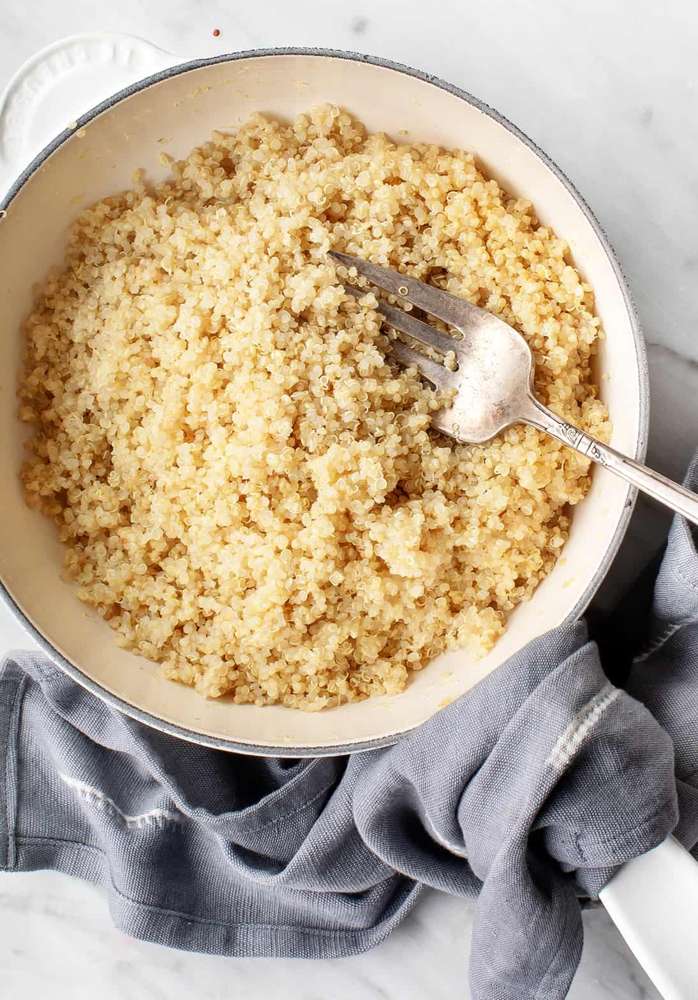

Quinoa

Description
Oatmeal is a high-protein grain from South American. It is
delicious and a good source of whole grains and fiber.
Ingredients
Steps
- Measure out quinoa (1/2 cup is a good amount) and rinse with water
to remove bitter taste. Add to a saucepan
- Meaure two parts water to one part quinoa and add to saucepan
- Bring to a boil on the stove. When water boils, turn down heat to medium
- Cook until water is evaporated, then add lid to the saucepan and turn off heat
- Let sit for a minute or two, then remove and serve